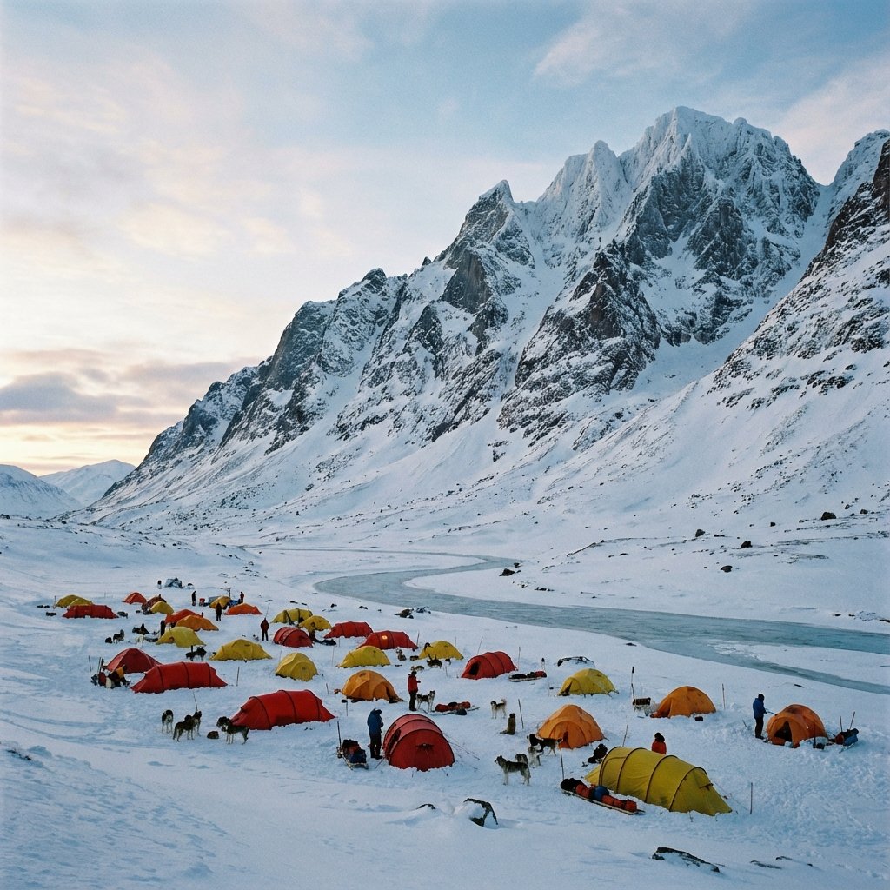

Final Ascent: Summit Success!
2024-02-28
Lat/Long: -77.700, 166.200
We reached the summit of the Northern Ridge at 2:15 PM today. The entire team stood together at the highest point, looking out over a world of ice and stone.
The data we collected during the ascent is exactly what we hoped for. The strata revealed a perfect historical record of the region's...
Read
More →